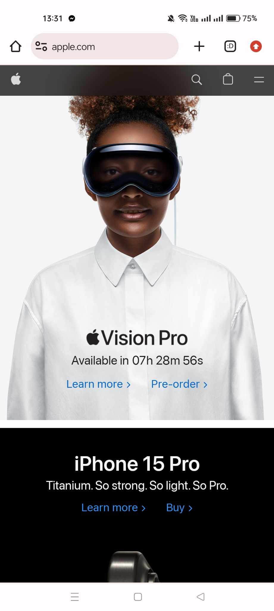
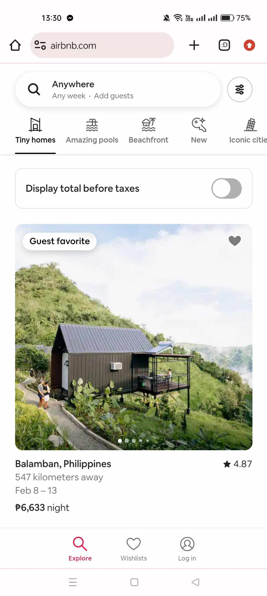

Organization/Company: Apple
Website: Apple
Description: Apple's website effectively utilizes visual hierarchy by emphasizing important elements such as product images, headlines, and calls to action. The use of larger font sizes, bold typography, and strategic placement of elements guides users' attention through the page.
Organization/Company: Dropbox
Website: Dropbox
Description: Dropbox's website employs a clean and minimalist design with ample white space, allowing content to breathe and providing a clutter-free interface. The use of white space enhances readability and focuses attention on key elements, contributing to a seamless user experience.
Organization/Company: Airbnb
Website: Airbnb
Description: Airbnb's website employs contrast to differentiate between headers, text, buttons, and images. This use of contrasting colors, font weights, and sizes enhances readability and visual appeal, facilitating user navigation and interaction.